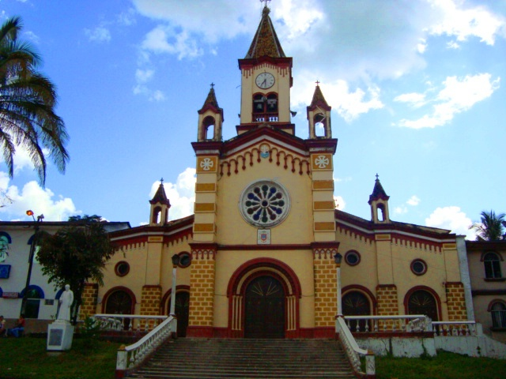

Principales sitios turísticos
Reserva Natural El Danubio

Está ubicada sobre la cordillera Oriental, en la Cuenca del Rio Bodoquero. Cuenta con tres senderos ecológicos que permite al turista disfrutar de un momento de placer con los abundantes y exóticos recursos de flora y fauna. La Lista de atractivos que se pueden experimentar en la reserva es bastante larga, Los turistas que quieran practicar Senderismo lo pueden hacer en las cascadas Los helechos o Murui Muinane o enamorarse de la imponente cascada Mo Buinaima, que tiene una altura aproximada de 20 metros.
Catedral Nuestra Señora de Lourdes
La Catedral Metropolitana Nuestra Señora de Lourdes es una iglesia catedralicia colombiana de culto católico consagrada a la Virgen María bajo la advocación de Nuestra Señora de Lourdes. Se localiza en el costado occidental de la Plaza San Francisco de Asís del municipio colombiano de Florencia, capital del departamento del Caquetá. La catedral es el principal templo de la Arquidiócesis de Florencia.
Reserva Natural y Ecoturísticas Las Dalias
Somos una reserva natural y ecoturística, ubicada en el departamento del Caquetá, Municipio de La Montañita. Nos dedicamos al cuidado y la conservación de más de 80 hectáreas de bosque. Ven y disfruta de nuestros servicios, realizamos caminatas guiadas por la reserva, gastronomía típica de la región y hospedaje en zona de camping y glamping.
Florencia (capital del departamento)
Florencia es un municipio colombiano, capital del departamento de Caquetá. Es el municipio más poblado de la Región Amazónica. Es conocido como «La Puerta de Oro de la Amazonía Colombiana». La cabecera municipal homónima es una ciudad joven, punto de convergencia de los municipios del norte y del sur del Caquetá. Está ubicada en la zona de piedemonte entre la Cordillera Oriental y la Amazonia, en la margen derecha del río Hacha, lo cual le da una posición privilegiada ambientalmente al ser el enlace entre la Región Andina y la Región Amazónica. Dista 519 km de la ciudad de Bogotá, capital de Colombia. Cuenta con 179 233 habitantes de acuerdo con la proyección del DANE para 2024. Su extensión territorial es de 2292 km², su altitud media es de 242 m s. n. m., su precipitación media anual es de 3840 mm y su temperatura promedio es de 25 °C. Está constituida por cuatro comunas en su área urbana y siete corregimientos en su área rural.
Otros sitios turísticos
- Cascada Mohan
- Reserva Natural y Ecoturistica La Avispa
- Reserva Natural Comunitaria El Manantial
Comida típica
Platos comunes en Caquetá:
- Platos con pescado de río y yuca
- Preparaciones con carne de caza (según disponibilidad y regulaciones)
- Guarapo y bebidas tradicionales
Información económica y ocupacional (estadística)
La economía de Caquetá ha tenido históricamente una base agropecuaria y extracción de recursos (incluida la minería en ciertos periodos), con la agricultura y la ganadería como actividades relevantes. En 2022 el departamento reportó crecimiento en su PIB y variaciones en el empleo según las series del DANE; la agricultura y la explotación de recursos han sido significativas en la estructura productiva local.
Los principales indicadores laborales para Caquetá, disponibles con datos de años anteriores, reflejan una tasa de desocupación del 13.9% en 2024, una tasa de ocupación del 50.3% y una participación de 56.7% en 2019. Estos datos, extraídos de la Gran Encuesta Integrada de Hogares (GEIH) del DANE, muestran que la tasa de desocupación de Caquetá fue de las más altas del país para ese período.
Indicadores laborales
- La Tasa de Desocupación es el porcentaje de la Población Económicamente Activa (PEA) que está desempleada. Una tasa del 13.9% en 2024 para Caquetá la ubicaba entre las más altas del país en ese año.
- La Tasa de Ocupación es el porcentaje de la Población en Edad de Trabajar (PET) que está ocupada. La cifra de 50.3% en 2019 indica que la mitad de las personas en edad de trabajar estaban empleadas.
- La Participación (Tasa Global de Participación) es el porcentaje de la población en edad de trabajar que pertenece a la Población Económicamente Activa. La cifra del 56.7% en 2019 refleja la proporción de personas que están trabajando o buscando empleo.
Consulta los perfiles departamentales del MinCIT o los informes del DANE para series oficiales y desagregadas.